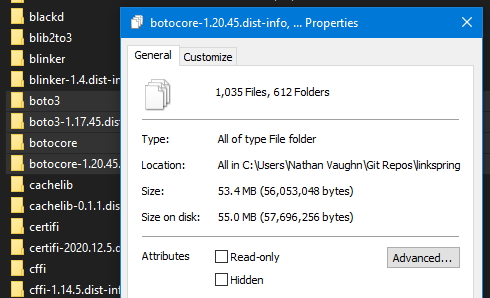
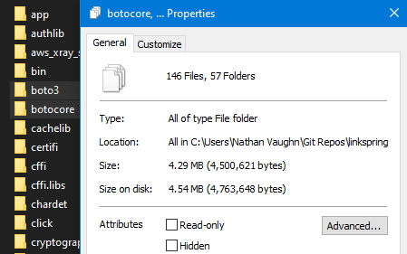

Stripping Down Botocore With Python Serverless Requirements
Table of Contents
Background
The boto3 SDK and the underlying botocore package are very large Python libraries.

It can highly beneficial to reduce the size of these in a final build, especially in a serverless environment. AWS Lambda functions for instance only allow a maximum extracted size of 250MB, so this is over 1/5th of that alone. Additionally, a smaller package size also can dramatically increase the cold-start time of a function.
Jack over at blog.cubieserver.de has an excellent blog post on how to strip down boto3 to the essentials, using a tool he wrote to facilitate layers in Lambda (don’t worry if you don’t know what that is). My application (Linkspring) is built with the confusingly-named serverless and serverless-python-requirements libraries. I was able to adapt his instructions to work with this stack.
Solution
Really, it’s pretty straight forward. Add a custom key (if you don’t have it already)
to your serverless.yml file and add a pythonRequirements key under that.
Within that, add slim: true and slimPatternsAppendDefaults: true and then your
patterns to exclude AWS services you don’t need. Example lifted directly from my
codebase:
custom:
pythonRequirements:
slim: true
strip: false
slimPatternsAppendDefaults: true
slimPatterns:
# Commented out lines are INCLUDED
- 'boto3/examples/*'
- 'botocore/data/accessanalyzer/*'
- 'botocore/data/acm-pca/*'
- 'botocore/data/acm/*'
- 'botocore/data/alexaforbusiness/*'
- 'botocore/data/amp/*'
- 'botocore/data/amplify/*'
- 'botocore/data/amplifybackend/*'
- 'botocore/data/apigateway/*'
- 'botocore/data/apigatewaymanagementapi/*'
- 'botocore/data/apigatewayv2/*'
- 'botocore/data/appconfig/*'
- 'botocore/data/appflow/*'
- 'botocore/data/appintegrations/*'
- 'botocore/data/application-autoscaling/*'
- 'botocore/data/application-insights/*'
- 'botocore/data/appmesh/*'
- 'botocore/data/appstream/*'
- 'botocore/data/appsync/*'
- 'botocore/data/athena/*'
- 'botocore/data/auditmanager/*'
- 'botocore/data/autoscaling-plans/*'
- 'botocore/data/autoscaling/*'
- 'botocore/data/backup/*'
- 'botocore/data/batch/*'
- 'botocore/data/braket/*'
- 'botocore/data/budgets/*'
- 'botocore/data/ce/*'
- 'botocore/data/chime/*'
- 'botocore/data/cloud9/*'
- 'botocore/data/clouddirectory/*'
- 'botocore/data/cloudformation/*'
- 'botocore/data/cloudfront/*'
- 'botocore/data/cloudhsm/*'
- 'botocore/data/cloudhsmv2/*'
- 'botocore/data/cloudsearch/*'
- 'botocore/data/cloudsearchdomain/*'
- 'botocore/data/cloudtrail/*'
- 'botocore/data/cloudwatch/*'
- 'botocore/data/codeartifact/*'
- 'botocore/data/codebuild/*'
- 'botocore/data/codecommit/*'
- 'botocore/data/codedeploy/*'
- 'botocore/data/codeguru-reviewer/*'
- 'botocore/data/codeguruprofiler/*'
- 'botocore/data/codepipeline/*'
- 'botocore/data/codestar-connections/*'
- 'botocore/data/codestar-notifications/*'
- 'botocore/data/codestar/*'
- 'botocore/data/cognito-identity/*'
- 'botocore/data/cognito-idp/*'
- 'botocore/data/cognito-sync/*'
- 'botocore/data/comprehend/*'
- 'botocore/data/comprehendmedical/*'
- 'botocore/data/compute-optimizer/*'
- 'botocore/data/config/*'
- 'botocore/data/connect-contact-lens/*'
- 'botocore/data/connect/*'
- 'botocore/data/connectparticipant/*'
- 'botocore/data/cur/*'
- 'botocore/data/customer-profiles/*'
- 'botocore/data/databrew/*'
- 'botocore/data/dataexchange/*'
- 'botocore/data/datapipeline/*'
- 'botocore/data/datasync/*'
- 'botocore/data/dax/*'
- 'botocore/data/detective/*'
- 'botocore/data/devicefarm/*'
- 'botocore/data/devops-guru/*'
- 'botocore/data/directconnect/*'
- 'botocore/data/discovery/*'
- 'botocore/data/dlm/*'
- 'botocore/data/dms/*'
- 'botocore/data/docdb/*'
- 'botocore/data/ds/*'
# - 'botocore/data/dynamodb/*'
# - 'botocore/data/dynamodbstreams/*'
- 'botocore/data/ebs/*'
- 'botocore/data/ec2-instance-connect/*'
- 'botocore/data/ec2/*'
- 'botocore/data/ecr-public/*'
- 'botocore/data/ecr/*'
- 'botocore/data/ecs/*'
- 'botocore/data/efs/*'
- 'botocore/data/eks/*'
- 'botocore/data/elastic-inference/*'
- 'botocore/data/elasticache/*'
- 'botocore/data/elasticbeanstalk/*'
- 'botocore/data/elastictranscoder/*'
- 'botocore/data/elb/*'
- 'botocore/data/elbv2/*'
- 'botocore/data/emr-containers/*'
- 'botocore/data/emr/*'
- 'botocore/data/es/*'
- 'botocore/data/events/*'
- 'botocore/data/firehose/*'
- 'botocore/data/fis/*'
- 'botocore/data/fms/*'
- 'botocore/data/forecast/*'
- 'botocore/data/forecastquery/*'
- 'botocore/data/frauddetector/*'
- 'botocore/data/fsx/*'
- 'botocore/data/gamelift/*'
- 'botocore/data/glacier/*'
- 'botocore/data/globalaccelerator/*'
- 'botocore/data/glue/*'
- 'botocore/data/greengrass/*'
- 'botocore/data/greengrassv2/*'
- 'botocore/data/groundstation/*'
- 'botocore/data/guardduty/*'
- 'botocore/data/health/*'
- 'botocore/data/healthlake/*'
- 'botocore/data/honeycode/*'
- 'botocore/data/iam/*'
- 'botocore/data/identitystore/*'
- 'botocore/data/imagebuilder/*'
- 'botocore/data/importexport/*'
- 'botocore/data/inspector/*'
- 'botocore/data/iot-data/*'
- 'botocore/data/iot-jobs-data/*'
- 'botocore/data/iot/*'
- 'botocore/data/iot1click-devices/*'
- 'botocore/data/iot1click-projects/*'
- 'botocore/data/iotanalytics/*'
- 'botocore/data/iotdeviceadvisor/*'
- 'botocore/data/iotevents-data/*'
- 'botocore/data/iotevents/*'
- 'botocore/data/iotfleethub/*'
- 'botocore/data/iotsecuretunneling/*'
- 'botocore/data/iotsitewise/*'
- 'botocore/data/iotthingsgraph/*'
- 'botocore/data/iotwireless/*'
- 'botocore/data/ivs/*'
- 'botocore/data/kafka/*'
- 'botocore/data/kendra/*'
- 'botocore/data/kinesis-video-archived-media/*'
- 'botocore/data/kinesis-video-media/*'
- 'botocore/data/kinesis-video-signaling/*'
- 'botocore/data/kinesis/*'
- 'botocore/data/kinesisanalytics/*'
- 'botocore/data/kinesisanalyticsv2/*'
- 'botocore/data/kinesisvideo/*'
- 'botocore/data/kms/*'
- 'botocore/data/lakeformation/*'
# - 'botocore/data/lambda/*'
- 'botocore/data/lex-models/*'
- 'botocore/data/lex-runtime/*'
- 'botocore/data/lexv2-models/*'
- 'botocore/data/lexv2-runtime/*'
- 'botocore/data/license-manager/*'
- 'botocore/data/lightsail/*'
- 'botocore/data/location/*'
- 'botocore/data/logs/*'
- 'botocore/data/lookoutequipment/*'
- 'botocore/data/lookoutmetrics/*'
- 'botocore/data/lookoutvision/*'
- 'botocore/data/machinelearning/*'
- 'botocore/data/macie/*'
- 'botocore/data/macie2/*'
- 'botocore/data/managedblockchain/*'
- 'botocore/data/marketplace-catalog/*'
- 'botocore/data/marketplace-entitlement/*'
- 'botocore/data/marketplacecommerceanalytics/*'
- 'botocore/data/mediaconnect/*'
- 'botocore/data/mediaconvert/*'
- 'botocore/data/medialive/*'
- 'botocore/data/mediapackage-vod/*'
- 'botocore/data/mediapackage/*'
- 'botocore/data/mediastore-data/*'
- 'botocore/data/mediastore/*'
- 'botocore/data/mediatailor/*'
- 'botocore/data/meteringmarketplace/*'
- 'botocore/data/mgh/*'
- 'botocore/data/mgn/*'
- 'botocore/data/migrationhub-config/*'
- 'botocore/data/mobile/*'
- 'botocore/data/mq/*'
- 'botocore/data/mturk/*'
- 'botocore/data/mwaa/*'
- 'botocore/data/neptune/*'
- 'botocore/data/network-firewall/*'
- 'botocore/data/networkmanager/*'
- 'botocore/data/opsworks/*'
- 'botocore/data/opsworkscm/*'
- 'botocore/data/organizations/*'
- 'botocore/data/outposts/*'
- 'botocore/data/personalize-events/*'
- 'botocore/data/personalize-runtime/*'
- 'botocore/data/personalize/*'
- 'botocore/data/pi/*'
- 'botocore/data/pinpoint-email/*'
- 'botocore/data/pinpoint-sms-voice/*'
- 'botocore/data/pinpoint/*'
- 'botocore/data/polly/*'
- 'botocore/data/pricing/*'
- 'botocore/data/qldb-session/*'
- 'botocore/data/qldb/*'
- 'botocore/data/quicksight/*'
- 'botocore/data/ram/*'
- 'botocore/data/rds-data/*'
- 'botocore/data/rds/*'
- 'botocore/data/redshift-data/*'
- 'botocore/data/redshift/*'
- 'botocore/data/rekognition/*'
- 'botocore/data/resource-groups/*'
- 'botocore/data/resourcegroupstaggingapi/*'
- 'botocore/data/robomaker/*'
- 'botocore/data/route53/*'
- 'botocore/data/route53domains/*'
- 'botocore/data/route53resolver/*'
# - 'botocore/data/s3/*'
# - 'botocore/data/s3control/*'
- 'botocore/data/s3outposts/*'
- 'botocore/data/sagemaker-a2i-runtime/*'
- 'botocore/data/sagemaker-edge/*'
- 'botocore/data/sagemaker-featurestore-runtime/*'
- 'botocore/data/sagemaker-runtime/*'
- 'botocore/data/sagemaker/*'
- 'botocore/data/savingsplans/*'
- 'botocore/data/schemas/*'
- 'botocore/data/sdb/*'
- 'botocore/data/secretsmanager/*'
- 'botocore/data/securityhub/*'
- 'botocore/data/serverlessrepo/*'
- 'botocore/data/service-quotas/*'
- 'botocore/data/servicecatalog-appregistry/*'
- 'botocore/data/servicecatalog/*'
- 'botocore/data/servicediscovery/*'
- 'botocore/data/ses/*'
- 'botocore/data/sesv2/*'
- 'botocore/data/shield/*'
- 'botocore/data/signer/*'
- 'botocore/data/sms-voice/*'
- 'botocore/data/sms/*'
- 'botocore/data/snowball/*'
# - 'botocore/data/sns/*'
- 'botocore/data/sqs/*'
- 'botocore/data/ssm/*'
- 'botocore/data/sso-admin/*'
- 'botocore/data/sso-oidc/*'
- 'botocore/data/sso/*'
- 'botocore/data/stepfunctions/*'
- 'botocore/data/storagegateway/*'
- 'botocore/data/sts/*'
- 'botocore/data/support/*'
- 'botocore/data/swf/*'
- 'botocore/data/synthetics/*'
- 'botocore/data/textract/*'
- 'botocore/data/timestream-query/*'
- 'botocore/data/timestream-write/*'
- 'botocore/data/transcribe/*'
- 'botocore/data/transfer/*'
- 'botocore/data/translate/*'
- 'botocore/data/waf-regional/*'
- 'botocore/data/waf/*'
- 'botocore/data/wafv2/*'
- 'botocore/data/wellarchitected/*'
- 'botocore/data/workdocs/*'
- 'botocore/data/worklink/*'
- 'botocore/data/workmail/*'
- 'botocore/data/workmailmessageflow/*'
- 'botocore/data/workspaces/*'
# - 'botocore/data/xray/*'This list of patterns tells serverless-python-requirements what folders to ignore.
The full list of services inside botocore will obviously differ over time,
but it’s trivial to write a Python or shell script to generate this for you.
Unfortunately excluding glob paths doesn’t work, so you have to do it this way.
Sidenote, I added the strip: false as otherwise I was unable to import
Pillow.
Conclusion
That’s really it. Thanks again to Jack for creating the original guide. I was able to shave nearly 50MB of size of my Lambda function with this method.
